GR20
Europe's toughest trek, north to south across Corsica's granite spine.
GR20 crosses Corsica for 180 km and ends at Conca. It starts at Calenzana. Your ordinary week counts toward all of it: at 5,000 steps a day that's about 7 weeks, with no flights and no leave. Below are the 20 places you pass, each with its photograph and its story.
- 180km end to end
- 20landmarks
- 7 weeksat 5,000 steps a day
- Concafinishes at

The landmarks of GR20
20 landmarks, in walking order. Each photograph is by the person credited beneath it, used as they licensed it.
-
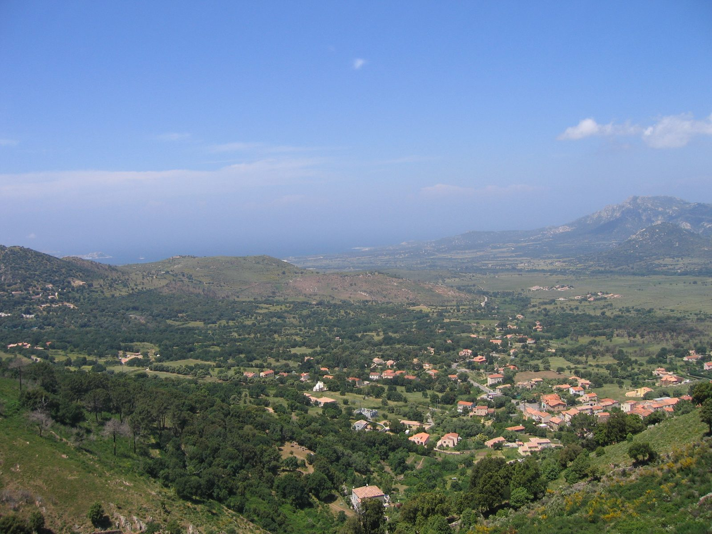
Photo: Unknown · Wikipedia, CC BY-SA 2.5 Calenzana
Red-and-white paint marks a stone wall in Calenzana, and the whole granite spine of Corsica waits beyond it. This Balagne village of orchards and a baroque bell tower is the northern trailhead of the GR20 — roughly 180 kilometres of the hardest waymarked walking in Europe. A fountain offers the last easy water before the climb into the maquis, which begins within the hour.
-
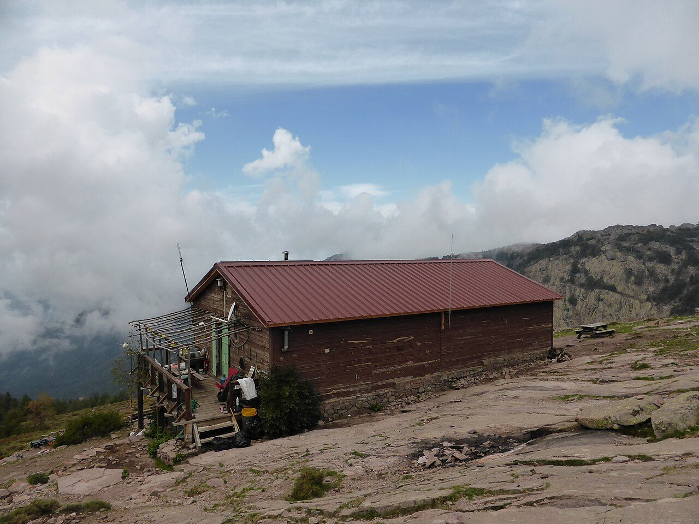
Photo: MartinThoma · Wikimedia Commons, CC0 Refuge d'Ortu di u Piobbu
Thirteen hundred metres of ascent lead to this ledge at 1,520 metres, under the Monte Corona ridge. Ortu di u Piobbu — 'the poplar's garden' — is the first refuge, its terrace looking back over a morning's worth of maquis. Laricio pines darken the slopes below. Somewhere east, tomorrow's crest at Bocca Piccaia already bares its teeth.
-
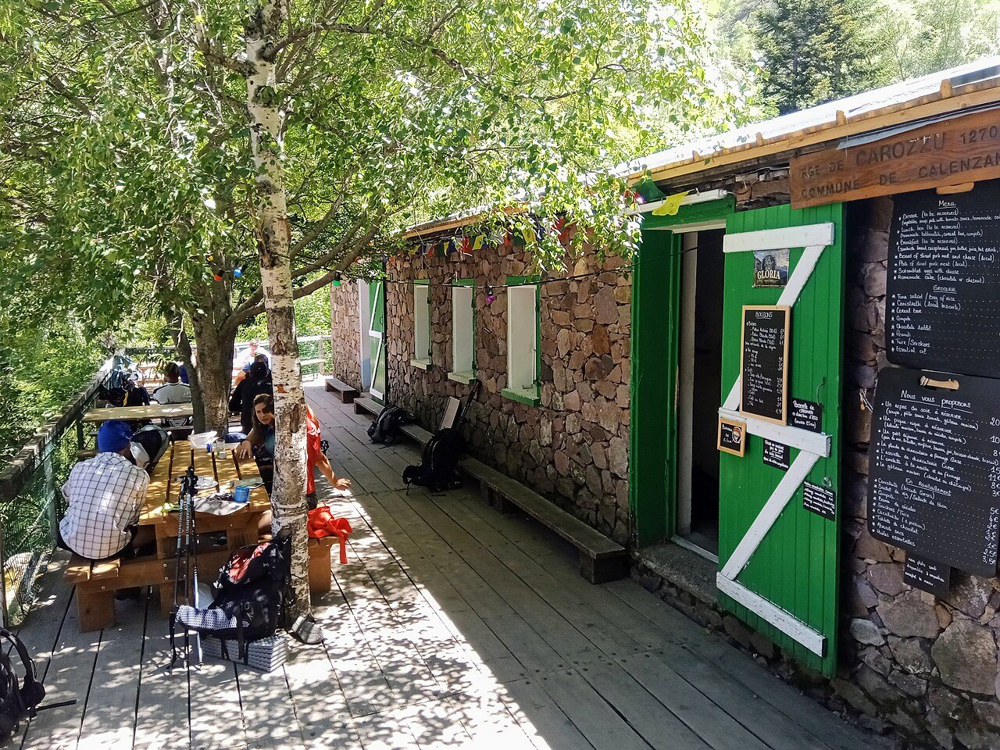
Photo: Rémih · Wikimedia Commons, CC BY-SA 4.0 Refuge de Carrozzu
A hard day of ridge and scree ends in beech wood at 1,270 metres. Carrozzu is a small refuge on a shelf above the gorge, cold water running nearby, the smell of woodsmoke and drying socks. The Spasimata crossing the following day demands dry rock and steady nerves, which makes the forecast the only thing worth discussing tonight.
-
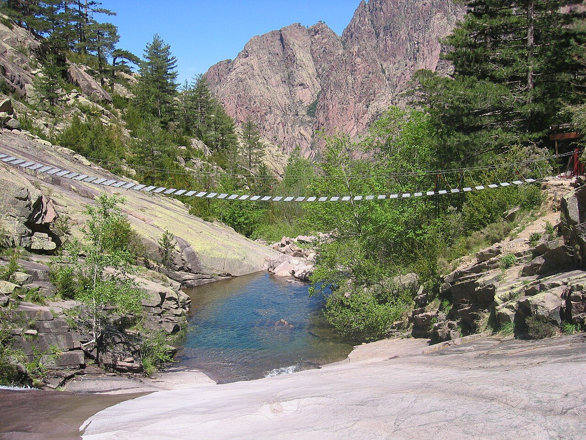
Photo: Tigerente · Wikimedia Commons, CC BY-SA 4.0 Spasimata Slabs & Suspension Bridge
The passerelle comes first — a suspension bridge strung over the Spasimata's green pools, taking one walker at a time. Then the slabs: pale granite tilted skyward, scoured smooth, chains bolted where the rock offers nothing to hold. In the wet it turns lethal, and people have died here. Dry, it is merely relentless, hands and boots working together.
-
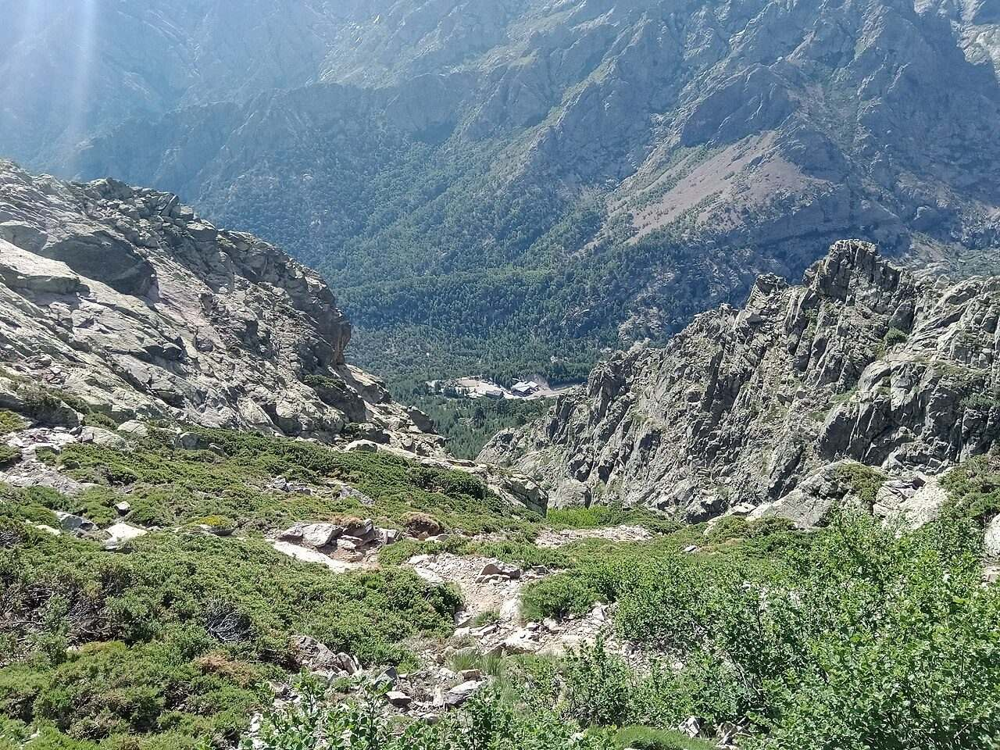
Photo: Rémih · Wikimedia Commons, CC BY-SA 4.0 Ascu Stagnu
Down at 1,422 metres, Haut-Asco breaks the wilderness — a tired old ski station with a hotel bar, a shop, and the day's first cold drink. Most walkers pause here before the high crossing above. The chairlift rusts against a backdrop of red rock, and Monte Cinto's mass fills the sky to the south. Beyond lies the roof of the route.
-
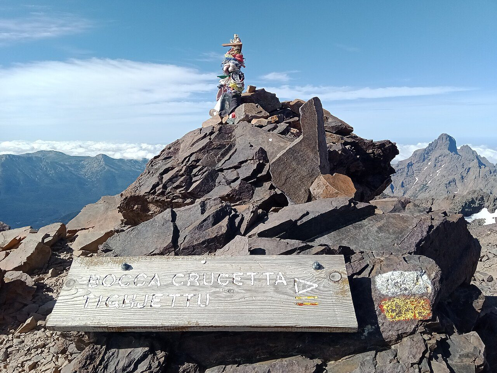
Photo: Rémih · Wikimedia Commons, CC BY-SA 4.0 Pointe des Éboulis
Above 2,600 metres the trail tops out on the flank of Monte Cinto, Corsica's highest peak at 2,706 metres. Since a 2015 rockfall killed seven walkers in the Cirque de la Solitude below, the waymarks have taken this higher, safer line over Pointe des Éboulis. Scree and cold wind, the whole island falling away. A side path climbs to Cinto's summit for those with the legs.
-
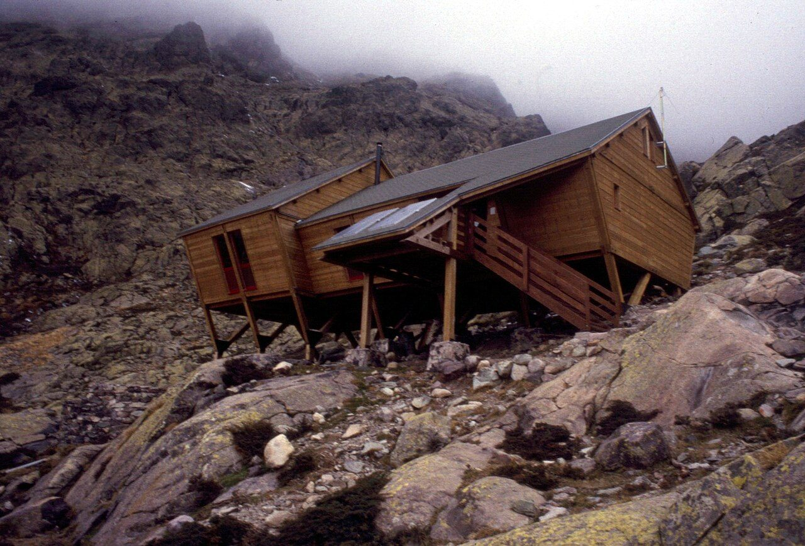
Photo: Pmau · Wikimedia Commons, CC BY-SA 4.0 Refuge de Tighjettu
The descent off the high ground is brutal, loose rock and steel rungs falling to Tighjettu at 1,683 metres. The refuge clings to the slope, terraces stacked like steps, with the Auberge U Vallone a little further down for anyone wanting a cooked meal. To the north the Cinto massif glows red at dusk. The hardest northern stage is done.
-
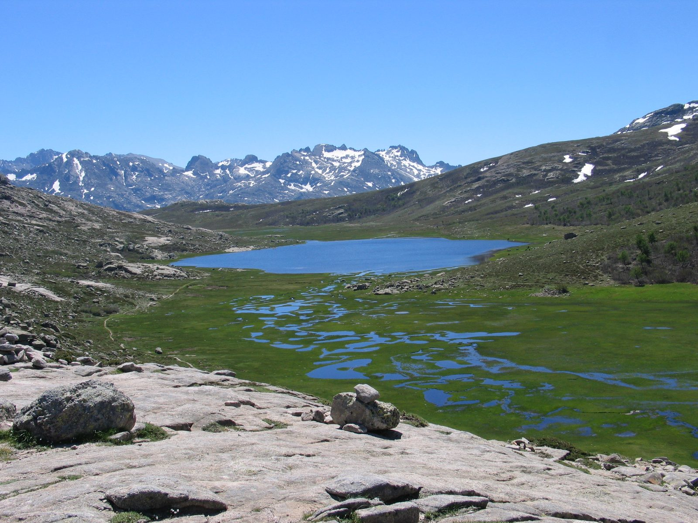
Photo: Francis THOMAS · Wikipedia, CC BY-SA 3.0 Lac de Nino
Grass replaces granite. Lac de Nino lies at 1,743 metres in an open bowl, its shallows fringed by pozzines — spongy peat lawns threaded with clear streams, cattle and half-wild horses grazing among them. The Tavignano, Corsica's second-longest river, rises here. After days of rock, the sudden softness of flat ground feels unreal.
-
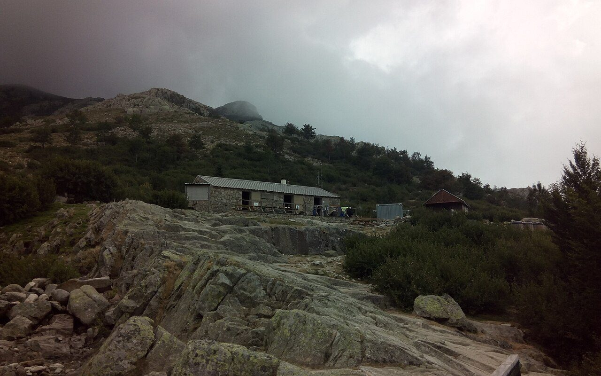
Photo: TeletubAstyanax · Wikimedia Commons, CC BY-SA 4.0 Refuge de Manganu
By the Manganu refuge at 1,601 metres the country has softened — the wide green pastures of the Campotile plateau spreading out, the young Tavignano threading through them. Shepherds still bring flocks to these bergeries in summer, and a cold beer sometimes appears from a cellar hut. The next climb, to the Brèche de Capitellu, is among the route's finest and most exposed.
-
Brèche de Capitellu
At 2,225 metres a notch barely wider than a doorway splits the Rotondo ridge — the Brèche de Capitellu. Chains help on the scramble up to it. Beyond, the crest runs on toward Petra Piana, the ground dropping sheer on both sides. Wind funnels through hard enough to lean on. Few passes on the trail feel this hard-won.
-
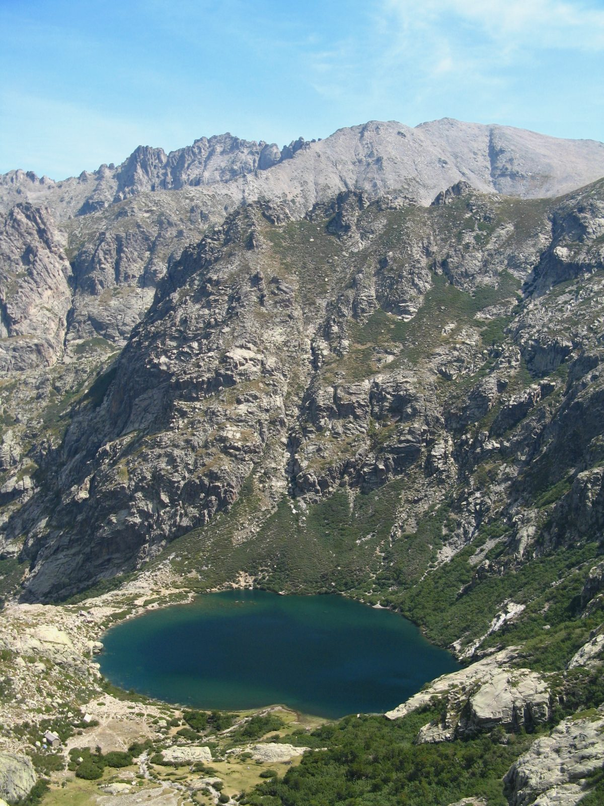
Photo: Patrick Rouzet · Wikipedia, CC BY-SA 3.0 Lac de Capitellu & Lac de Melo
From the crest, two lakes hold the light far below. Lac de Capitellu, at 1,930 metres, is the deepest in Corsica at some 42 metres; Lac de Melo sits lower, feeding the Restonica gorge that draws crowds from Corte in summer. Up here there is only rock, wind, and the pair of them glinting cold in their granite bowls.
-
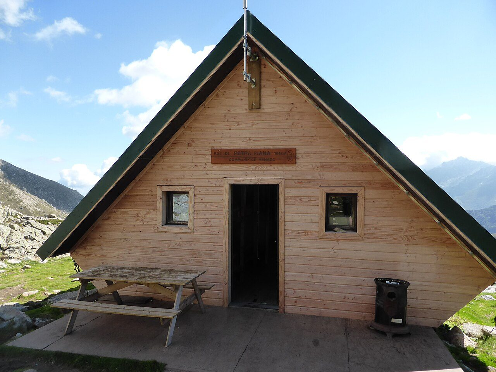
Photo: MartinThoma · Wikimedia Commons, CC0 Refuge de Petra Piana
Petra Piana perches at 1,842 metres with one of the trail's great outlooks — the Monte Rotondo massif on one side, the just-walked ridge on the other. From here a high-level variant follows the crests to Onda, harder and finer than the valley path. Sunset turns the granite copper, and the choice of line waits for morning.
-
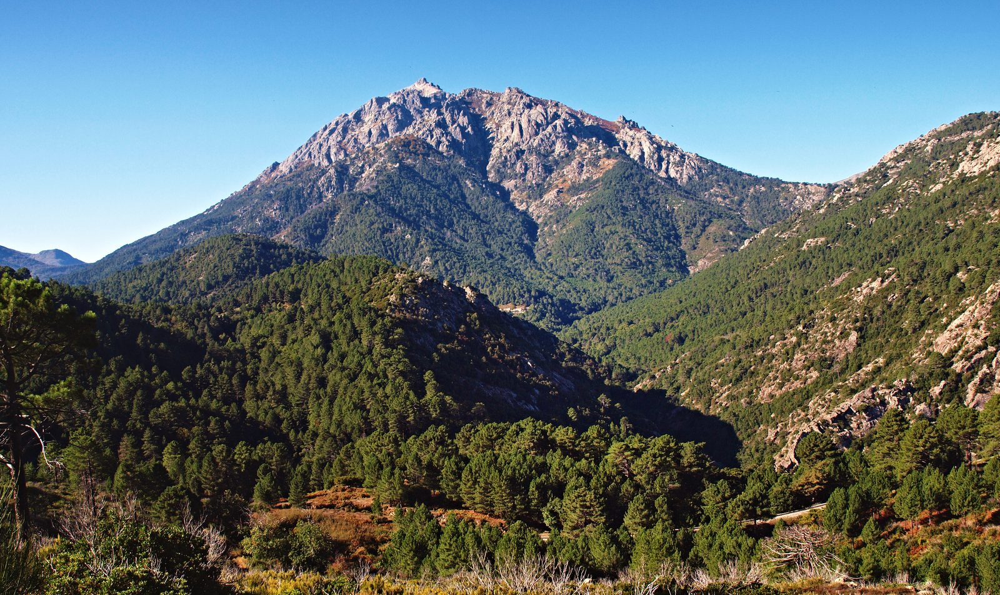
Photo: Pierre Bona · Wikipedia, CC BY-SA 3.0 Vizzavona
Beech and laricio forest closes overhead, and the railway appears — Vizzavona at 920 metres, the halfway point where the GR20 splits into its northern and southern halves. A little station on the Ajaccio–Bastia line means a train, a hot meal, a real bed. The Cascades des Anglais tumble nearby. Many finish here, content with the north. The south is another trek entirely.
-
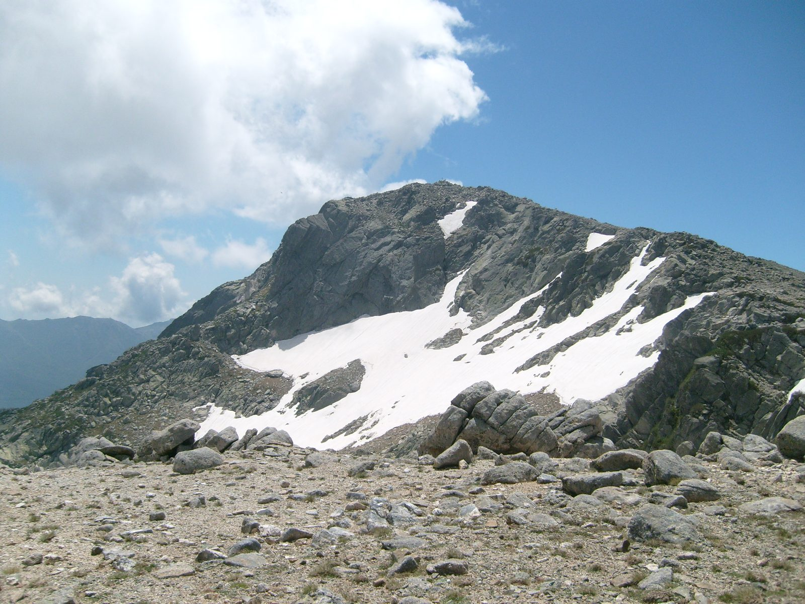
Photo: TeletubAstyanax · Wikipedia, CC BY-SA 4.0 Monte Renoso
The southern half runs gentler at first, through pine and pasture, then lifts onto the Renoso massif. Monte Renoso reaches 2,352 metres, a straightforward detour by the high variant that passes the dark tarn of Lac de Bastani at 2,092 metres. Snow lingers here into summer. The crowds of the north have thinned to almost nothing.
-
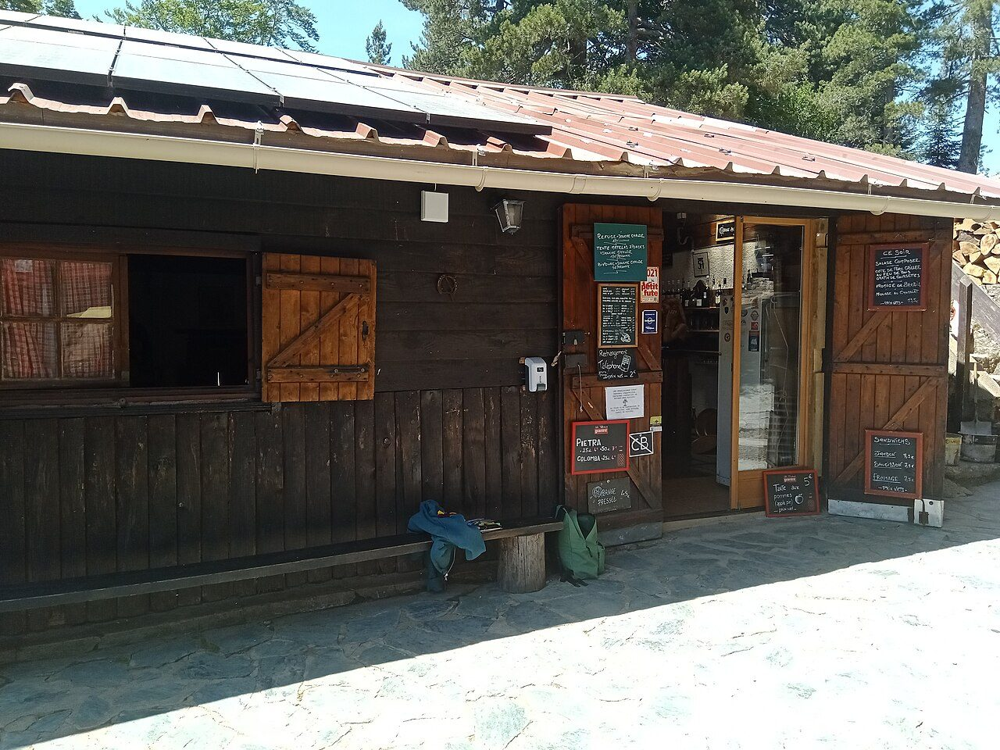
Photo: Rémih · Wikimedia Commons, CC BY-SA 4.0 Bocca di Verdi
A wooded col at 1,289 metres, Bocca di Verdi comes as a green breather between two ranges. There is a gîte here, hot food, and the shade of tall pines after open ridge. Streams cross the path. The Col de Verde, as maps also name it, marks the start of the long climb to the famous Usciolu ridge.
-
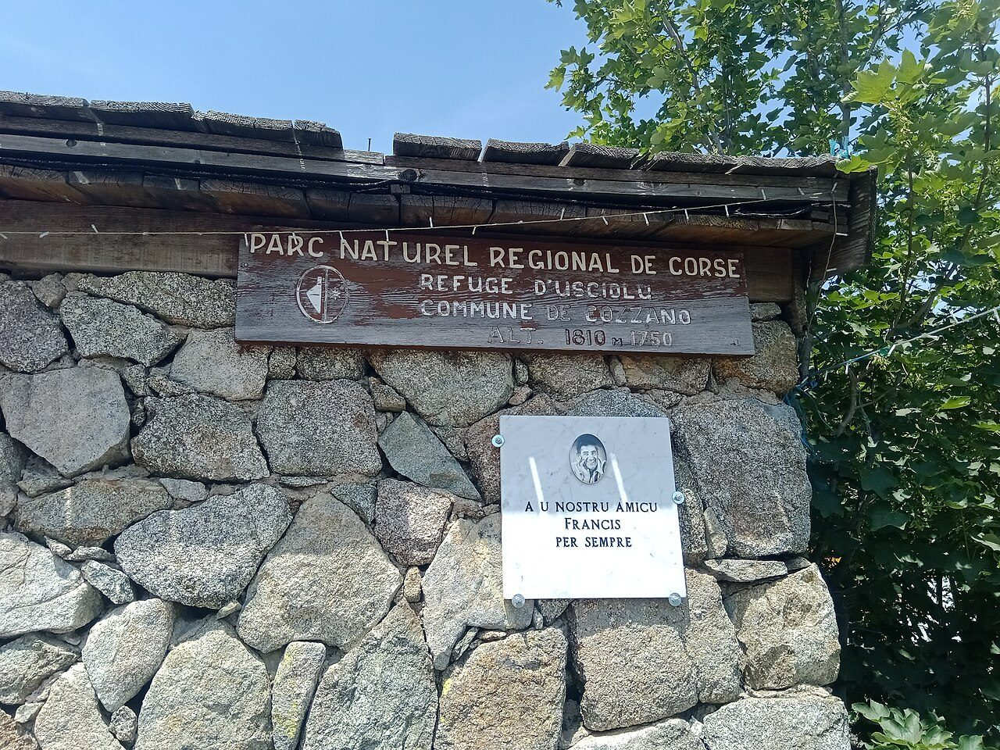
Photo: Rémih · Wikimedia Commons, CC BY-SA 4.0 Refuge d'Usciolu
Usciolu sits at 1,750 metres just below one of the GR20's legends — the arête à Monda, a jagged granite spine that the next stage threads, weaving between blocks with the island dropping away on either hand. The refuge shop is well stocked for its remoteness. By night the ridge stands as a black silhouette against the stars.
-
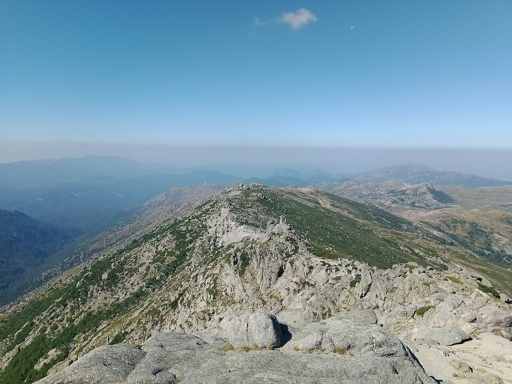
Photo: Rémih · Wikimedia Commons, CC BY-SA 4.0 Monte Incudine
Alcudina — Monte Incudine — rises to 2,134 metres, the first true summit of the south and the highest ground since Vizzavona. The name means 'the anvil', and its broad top catches every storm; walkers race the afternoon cloud to cross it. From the summit cross, the Bavella needles show themselves at last, saw-toothed on the southern horizon. The end is nearly in sight.
-
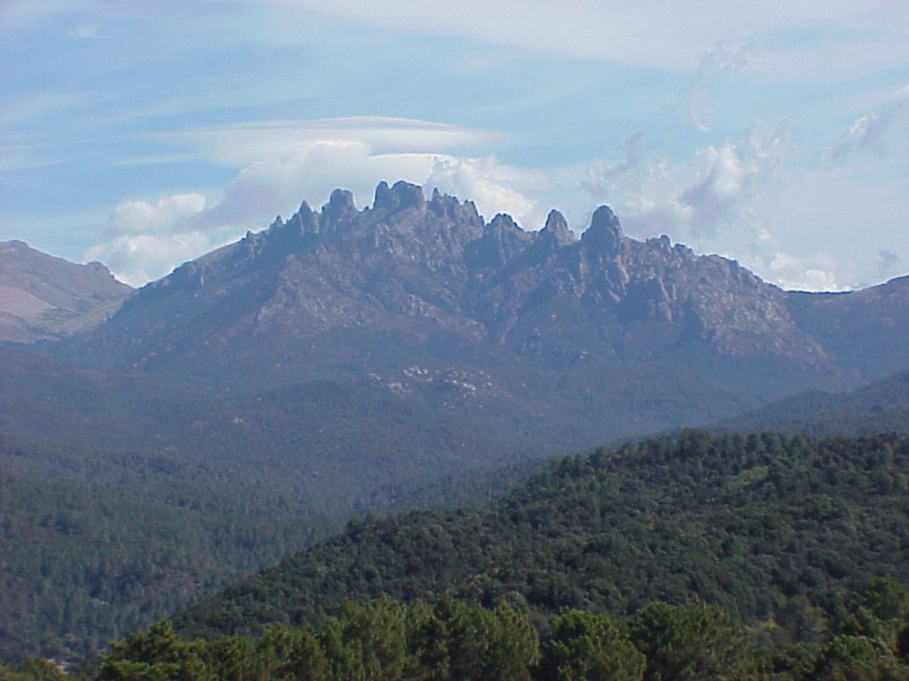
Photo: Unknown · Wikipedia, CC BY-SA 3.0 Aiguilles de Bavella
Few sights on the trail match the Aiguilles de Bavella — the needles, spires of red-gold granite clawing at the sky above the Col de Bavella at 1,218 metres. A statue of Notre-Dame des Neiges keeps the pass. Laricio pines root in impossible cracks. In late afternoon the southern light sets the whole rock face ablaze.
-
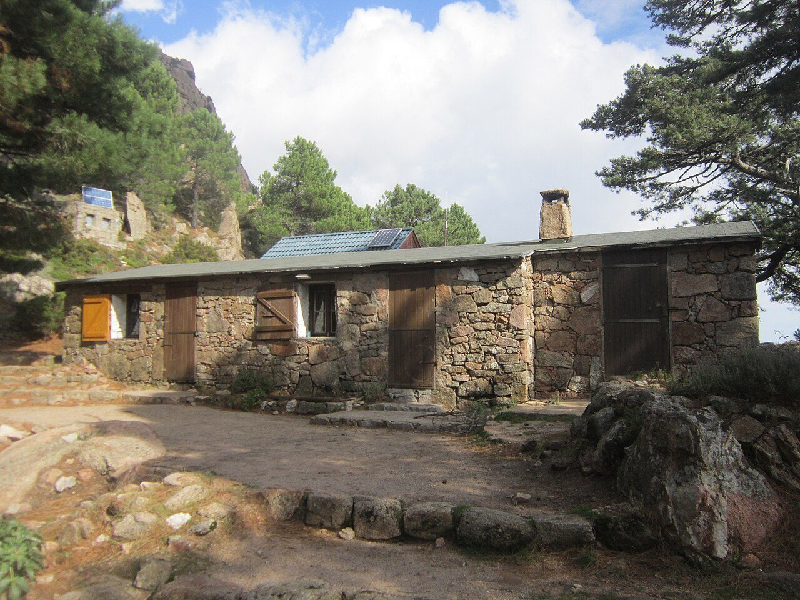
Photo: TeletubAstyanax · Wikimedia Commons, CC BY-SA 3.0 Refuge de Paliri
The last refuge, Paliri, sits at 1,055 metres among pines and strangely eroded towers, the Bavella spires still catching light to the north. Only one short stage remains. Walkers linger on the terrace here — boots battered, legs like wood, the sea now a blue line to the south-east. Tomorrow the mountains finally give way.
-
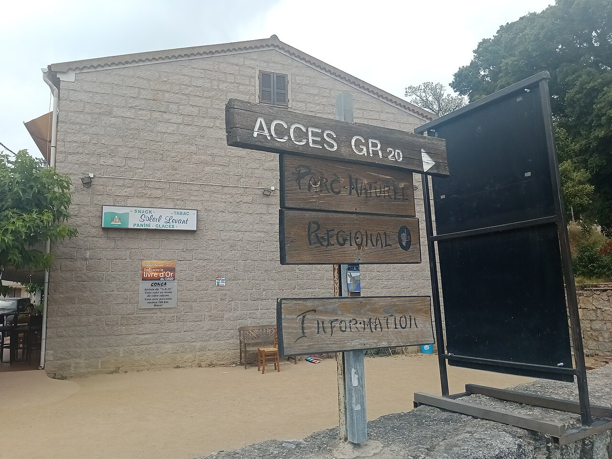
Photo: Rémih · Wikimedia Commons (geo), CC BY-SA 4.0 Conca
A low village at 252 metres among cork oaks marks the end. Conca — the southern terminus, near Porto-Vecchio and the sea — closes roughly 180 kilometres and more than 10,000 metres of climbing across the entire granite spine of Corsica. The final red-and-white blaze waits on a wall by the road, and beyond it the toughest waymarked trail in Europe lies finished.
Walking GR20
Your watch is already counting these steps. Watch Walks spends them on GR20, all 180 km of it, and hands you each landmark as you reach it. There's no route recording, no account and no ads. The Inca Trail is free; this one is a one-time purchase with no subscription.
Other trails in Europe
- Camino de Santiago 780 km · Spain
- Length of Britain 1,745 km · United Kingdom
- Tour du Mont Blanc 170 km · France/Italy/Switzerland
- West Highland Way 154 km · Scotland
- Walker's Haute Route 180 km · France / Switzerland
- Kungsleden (The King's Trail) 440 km · Sweden